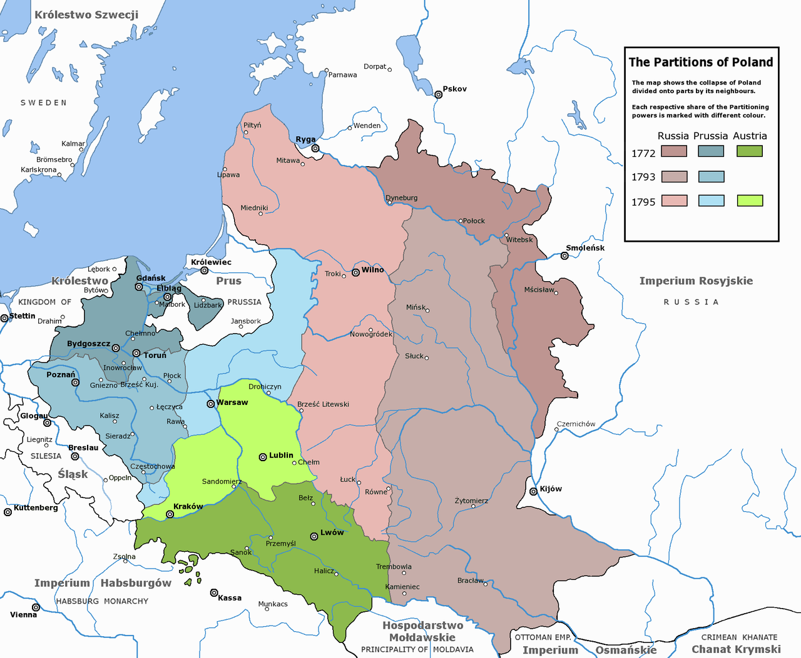

휴전 (6) - 캐스팅 보트(Casting vote)
게시: 2023-08-07T06:30:28+09:00
훗날인 1814년, 나폴레옹이 폐위되고 아직 엘바 섬에 있을 무렵, 러시아군의 랑제론은 프랑스 파리에서 베르티에를 만날 일이 있었습니다. 그 자리에서 베르티에는 이 때의 휴전협정에 대해 '그 휴전협정은 모조리 나폴레옹의 잘못이었다, 나폴레옹이 모든 것을 혼자 결정했다, 1812년 이후 나폴레옹은 결코 자신들과 함께 이탈리아와 독일에서 싸우던 그 남자가 아니었다'라고 말했다고 합니다. 확실히 나폴레옹이 나이가 들면서 사람이 변한 것은 사실이었지만, 휴전협정을 맺은 것은 나폴레옹 혼자의 결정이었고 그로 인한 결과는 모조리 나폴레옹의 잘못이라는 것은 사실이 아니었습니다. 적어도 당시 나폴레옹이 휴전을 제의할 때 나폴레옹의 부하들 중 그 누구도 반대하지 않았고 그건 베르티에 본인도 마찬가지였습니다. 휴전협정이 맺어질 때, 겉보기로는 여전히 나폴레옹이 크게 우세했습니다. 랑제론에 따르면 당시 연합군에게는 8만이, 나폴레옹에게는 아직 13만의 병력이 있었지만 프랑스측의 사정도 결코 좋지는 못했습니다. 확실히 나폴레옹의 군대는 급조된 부대답게 빠르게 망가져 가고 있었습니다. 4월 25일 네의 제3군단은 총원 49,189명이었고 우디노의 제12군단은 26,194명이었습니다. 그러나 5월 31일 조사를 해보니 제3군단은 24,581명이었고, 6월 4일 조사된 제12군단의 총원수는 13,818명이었습니다. 뤼첸과 바우첸 2번의 전투를 겪으면서, 불과 1달 반도 안 되어 병력이 절반으로 줄어든 것입니다. 물론 전투에 의한 사상자도 많았지만 그보다 더 많은 숫자가 질병과 피로 등 비전투 손실로 사라졌고, 난생 처음 겪는 끔찍한 살육에 질려버린 어린 신병들의 자해로 인한 부상도 많았습니다. 특히 심각했던 것은 휴전이 발표되자마자 각 군단에서 수만 명의 환자들이 쏟아져 나왔다는 점이었습니다. 그동안 전투 상황이라서 억지로 부대 안에서 끌어안고 있던 병자들과 부상병들을 각 부대에서 일거에 쏟아냈기 떄문이었습니다. 그 결과, 그나마 유지되고 있던 각 부대들의 전투 가능 인원수는 다시 60~70% 수준으로 크게 떨어졌습니다. 굳이 기병대 추가 편성이 아니더라도, 나폴레옹에게는 정말로 부대를 재편성할 시간이 필요했습니다. 그리고 나폴레옹이 휴전협정을 제안한 것은 무엇보다 연합군이 브레슬라우가 아니라 슈바이트니츠로 향했기 때문이었습니다. 나폴레옹으로서는 연합군이 오스트리아가 연합군과 내통하고 있으며 곧 연합군의 일원으로 참전할 것이라고 믿지 않을 수 없었습니다. 그리고 만약 그럴 경우, 보헤미아 국경을 끼고 길게 늘어진 프랑스군의 전열은 너무나 취약했습니다. 나폴레옹에겐 장인어른이자 오스트리아 황제인 프란츠가 연합군에 가담하지 않도록 설득할 시간이 필요했습니다. 나폴레옹에게 오스트리아는 만만한 존재였을까요? 나폴레옹은 언제나 오스트리아를 밥먹듯이 격파해왔습니다. 그러나 나폴레옹은 한번도 러시아-오스트리아-프로이센 3국의 연합군을 한꺼번에 상대한 적이 없었습니다. 그건 결코 우연이 아니었습니다. 나폴레옹은 단지 우수한 전술가가 아니라 정말 뛰어난 전략가이자 외교정치가로서, 적을 분산시키는 것에 큰 비중을 두고 노력했기 때문이었습니다. 그 덕분에 1805년 아우스테를리츠에서는 프로이센이 가담하지 않았고, 1806~1807년에는 오스트리아가 빠졌으며, 1809년 바그람에서는 러시아와 프로이센이 가담하지 않았습니다. 1812년에는 오스트리아와 프로이센이 오히려 나폴레옹 편에서 싸웠습니다. 그런데 만약 여기서 오스트리아의 참전을 막지 못한다면, 나폴레옹으로서는 난생 처음으로 러시아-오스트리아-프로이센 3국 연합군과 싸워야 했습니다. 그러나 나폴레옹은 오스트리아를 참전하지 못하도록 막을 수 있다고 생각했습니다. 당시 유럽의 국제 역학 관계가 무척이나 복잡하고 오묘했기 때문이었습니다. 1813년 전쟁의 연합국은 러시아-프로이센-영국이었습니다. 러시아가 원하는 것은 폴란드 땅이었습니다. 그리고 프로이센이 원하는 것은 작센 땅이었습니다. 원래 프로이센이 쥐고 있다가 1806년 패배로 인해 나폴레옹에게 빼앗긴 프로이센령 폴란드 땅까지 모조리 러시아가 먹는 대신 프로이센에게는 보상조로 작센을 주겠다는 것이 러시아와 프로이센의 밀약인 칼리쉬(Kalisch) 조약의 핵심이었습니다. 그리고 영국이 원하는 것은 이베리아 반도와 네덜란드, 시칠리아 섬을 영국이 맘대로 좌지우지하게 하고 해외의 영국 식민지를 연결하는 바다 전체를 가지겠다는 것이었습니다. 하지만 이런 연합국의 속셈은 이번 전쟁의 캐스팅 보트를 쥔 오스트리아의 이익과 정면으로 배치되는 것이었습니다. 일단 프로이센이 작센을 병합하는 것은 독일권의 맹주를 자처하는 오스트리아로서는 펄쩍 뛸 일이었습니다. 그리고 러시아가 폴란드를 모두 먹어치우고 오스트리아와 국경을 마주 대는 것 또한 오스트리아로서는 매우 껄끄러운 일이었습니다. 그나마 네덜란드와 시칠리아, 대양에서의 이권 등 영국이 노리는 바는 오스트리아에게 있어서 별 관심사가 아니었습니다. 그렇게 때문에 영국은 자국의 이해 관계에 있어 오스트리아의 협조를 얻어내는 것에 별 어려움이 없을 것이라고 판단하고 있었습니다. 그러나 그건 어리숙한 영국의 오판이었습니다.

(18세기 후반 폴란드가 3차에 걸쳐 분할된 과정을 보여주는 지도입니다. 이건 폴란드가 만든 지도라서 보시다시피 우크라이나의 키이우가 키요프(Kijów)라는 폴란드식 이름으로 표시되어 있고, 거의 그 인근까지가 폴란드 영토로 되어 있습니다. 폴란드는 원래 폴란드-리투아니아 연방이라는 이름의 대국으로서, 나폴레옹 시대에도 리투아니아 수도인 빌니우스(지도에는 Wilno라고 표시) 일대까지 대다수의 주민들이 폴란드계였습니다.)
영국은 이번 휴전협정에서 철저히 제외되어 있었고 러시아와 프로이센 어느 누구도 영국에서 파견나온 인사들과 협의하지 않았습니다. 6월 6일 주 프로이센 영국 대사 스튜어트는 외무성 장관인 캐슬레이에게 보내는 편지에서 아무래도 배신을 당한 것 같다면서 특히 오스트리아가 나폴레옹과의 혼인 관계를 이용하려 하는 것 같으니 영국으로서는 조심해야 한다는 언급을 했습니다. 당시 라이헨바흐(Reichenbach)의 러시아 사령부에 있던 영국군 장교 우(Hudson Lowe)도 전쟁성 차관에게 보내는 편지에서 대륙의 동맹들이 영국의 이익을 무시하려는 것 같다면서 특히 휴전이 6주 밖에 안 되므로 그 사이의 협상 과정에서 영국 본국과의 소통이 거의 불가능하다는 점을 지적했습니다. 영국은 이러다가 1807년 틸지트 조약 때처럼 또 알렉산드르와 나폴레옹 사이에 극적인 타협이 이루어지는 것이 아닌가 하고 전전긍긍했습니다.
대체 영국은 어쩌다가 퍼주기만 할 뿐 결정적인 순간에 찬밥 신세가 된 것일까요? 대륙의 정세에 대해 아무래도 좀 어두웠던 영국은 처음에 잘 이해 못했지만, 알고보면 영국의 이런 위기는 모두가 메테르니히가 다분히 의도적으로 조장한 것이었습니다. 메테르니히는 대체 왜 그랬을까요?

(허드슨 로우 대령은 원래 아일랜드 태생의 영국인으로, 아버지는 영국 출신 군의관이었고 어머니가 아일랜드인이었습니다. 그는 18세의 나이로 아버지가 복무하던 제50 보병연대에 소위로 들어갔는데, 이후 맡은 임지와 임무를 보면 나폴레옹의 꽁무니를 줄기차게 쫓아다니는 역할을 했습니다. 가령 나폴레옹이 포위 공격하던 툴롱 항구에 지원 병력으로 투입되기도 했고, 코르시카에 주둔하며 나폴레옹 고향집 근처에서 근무하며 'Casa Buonaparte' 즉 보나파르트 장(莊)에서 먹고 자기도 했습니다. 그는 1813년 1월, 당시 러시아군에게 항복한 독일계 그랑다르메 포로들로 이루어진 자원병 부대를 검열하라는 명령을 받고 러시아로 파견되었다가 그때부터 러시아-프로이센 연합군을 따라 긴 여정을 시작하게 되었습니다. 1814년 퐁텐블로에서 나폴레옹이 퇴위하자 그 소식을 맨처음 런던에 전달할 전령으로 뽑힌 것도 바로 로우 대령이었습니다. 그런 인연 덕분에 그는 러시아와 프로이센으로부터 많은 훈장을 받았고 영국군에서도 소장으로 진급하는 영광을 누렸습니다만, 나중에 세인트 헬레나 섬에서 나폴레옹의 간수 노릇을 하는 임무를 받는 불운을 누리기도 했습니다.)
Source : The Life of Napoleon Bonaparte, by William Milligan Sloane Napoleon and the Struggle for Germany, by Leggiere, Michael V
https://en.wikipedia.org/wiki/Partitions_of_Poland